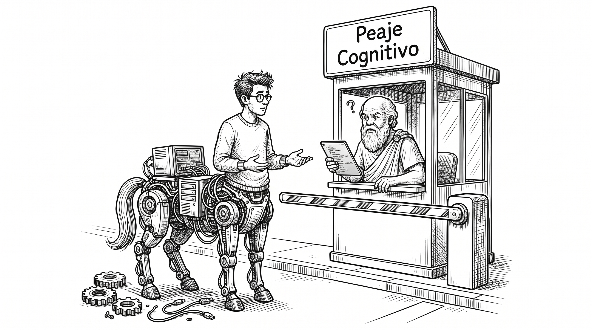

EL EFECTO BULLET
La IA genera código en segundos.
Eso no significa que tu equipo lo entienda.
Cuando la velocidad de generación supera la asimilación biológica humana, acumulamos deuda cognitiva: sistemas que compilan y pasan tests hoy, pero que nadie sabrá modificar mañana.
Desarrollo Artesanal
Lento, pero el equipo forja el modelo mental del sistema paso a paso (Teoría del Programa de Naur). Cero deuda cognitiva.
El Efecto Bullet
La IA genera en minutos lo que antes llevaba semanas. Parece progreso real, pero al saltear el razonamiento, el equipo pierde el control de lo que realmente entrega a producción.

El Peaje Socrático
Rápido y sostenible. Por cada hora de IA, una de asimilación humana. Tres preguntas socráticas antes del commit garantizan que el equipo realmente comprende lo que entrega a producción.
Fundamentos de la Investigación
Conceptos esenciales desarrollados en el paper formal con respaldo bibliográfico:
¿Qué es la Deuda Cognitiva?
La diferencia entre el código que tu sistema ejecuta y el modelo mental que tu equipo realmente domina.
Las 5 Reglas Operativas
Control de ritmo, regla 10+10, peaje socrático, auditoría preventiva y modelo centauro.
Los Datos Empíricos
Estudios de Carnegie Mellon, Stanford, Wharton, Anthropic y Faros AI analizados en conjunto.
Descargá el Paper Completo
Documento de 19 páginas con el marco teórico completo, análisis epistemológico de Naur, fundamentos matemáticos de Fagan/Cohen, protocolo experimental 2×2 y referencias bibliográficas.